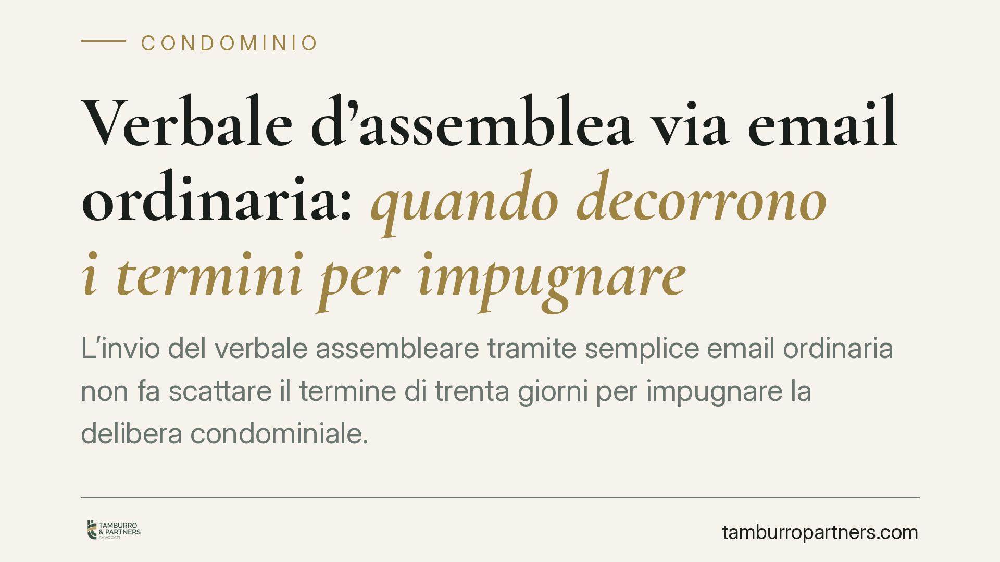

Verbale d'assemblea via email ordinaria: quando decorrono i termini per impugnare
L'invio del verbale assembleare tramite semplice email ordinaria non fa scattare il termine di trenta giorni per impugnare la delibera condominiale. Lo chiarisce la Corte di Cassazione: solo strumenti dotati di certezza legale, come la PEC o la raccomandata, garantiscono la prova della ricezione e attivano quindi la decorrenza dei termini a carico del condomino assente.

Il caso
Una condòmina assente all'assemblea riceveva il verbale della riunione tramite email ordinaria. L'amministratore riteneva che, da quel momento, decorressero i trenta giorni entro cui la delibera poteva essere impugnata. La condòmina proponeva invece impugnazione oltre quel termine, sostenendo che l'invio con posta elettronica semplice non fosse idoneo a farlo decorrere.
La Corte di Cassazione ha dato ragione alla condòmina: l'email ordinaria, priva di meccanismi che ne certifichino la consegna, non è sufficiente a far partire il termine di decadenza previsto dalla legge.
Inquadramento normativo
Il riferimento è l'art. 1137, comma 2, cod. civ., secondo cui il condomino assente, dissenziente o astenuto può impugnare la delibera assembleare entro trenta giorni. Il termine decorre, per l'assente, dalla data in cui gli viene comunicato il verbale.
Si tratta di un termine di decadenza: una volta scaduto, il diritto di impugnare si perde in modo definitivo, senza possibilità di recupero. Proprio la gravità di questa conseguenza impone che la comunicazione sia effettuata con uno strumento capace di dimostrare, con certezza, che il destinatario l'ha effettivamente ricevuta.
La posta elettronica ordinaria non offre questa garanzia. A differenza della PEC (posta elettronica certificata) o della raccomandata con avviso di ricevimento, l'email semplice non genera una prova legale della consegna al destinatario: non si può stabilire con certezza se e quando il messaggio sia stato recapitato. Per questo la Cassazione ne esclude l'idoneità a far decorrere il termine.
Implicazioni pratiche
Per l'amministratore, la conseguenza è concreta: comunicare il verbale via email ordinaria non chiude la partita. Il termine per impugnare resta di fatto aperto, perché non è mai iniziato a decorrere validamente. La delibera resta quindi esposta a impugnazione per un tempo indefinito, con evidenti rischi di incertezza sugli atti già eseguiti.
Per il condomino assente, l'indicazione è speculare: se ha ricevuto il verbale solo tramite email ordinaria, il termine di trenta giorni potrebbe non essere ancora decorso. Questo non significa poter attendere all'infinito, ma consente margini di valutazione più ampi rispetto a chi ha ricevuto una PEC o una raccomandata.
Attenzione però a un punto spesso trascurato: se il regolamento condominiale o una precedente delibera hanno espressamente autorizzato l'uso dell'email come canale di comunicazione, o se il condomino ha comunque avuto piena conoscenza del verbale (ad esempio rispondendo al messaggio o citandone il contenuto), il quadro può cambiare. La certezza della conoscenza effettiva può in certi casi supplire alla mancanza di prova formale.
Cosa fare in concreto
- Amministratori: trasmettete il verbale ai condomini assenti tramite PEC o raccomandata con avviso di ricevimento. Conservate le ricevute: sono la prova che fa decorrere i termini.
- Verificate il regolamento condominiale: se volete usare l'email come canale ordinario, fatelo prevedere da una clausola espressa o da una delibera dedicata, con l'indicazione degli indirizzi dei condomini.
- Condomini assenti: annotate la data e il mezzo con cui avete ricevuto il verbale. È il dato da cui dipende il calcolo dei trenta giorni.
- In caso di dubbio sui termini, consigliamo di far valutare tempestivamente la situazione: attendere può comportare la perdita definitiva del diritto di impugnare.
- Non affidatevi a comunicazioni informali (chat, email semplici, messaggi) quando è in gioco un termine di decadenza: la forma, qui, incide sulla sostanza.
Conclusioni
La pronuncia conferma un principio di garanzia: i termini di decadenza decorrono solo da comunicazioni che offrono certezza legale della ricezione. Per gli amministratori è un invito a rivedere le modalità di trasmissione dei verbali; per i condomini, un elemento da valutare con attenzione prima di decidere se e come impugnare una delibera.
---
*Contributo informativo a cura di Tamburro & Partners - Avv. Giuseppe Tamburro. Non costituisce parere legale.*
Ogni condominio ha una storia a sé.
Se gestisci un'amministrazione e vuoi un confronto su una specifica questione condominiale, scrivi allo studio. Ti rispondiamo entro un giorno lavorativo.